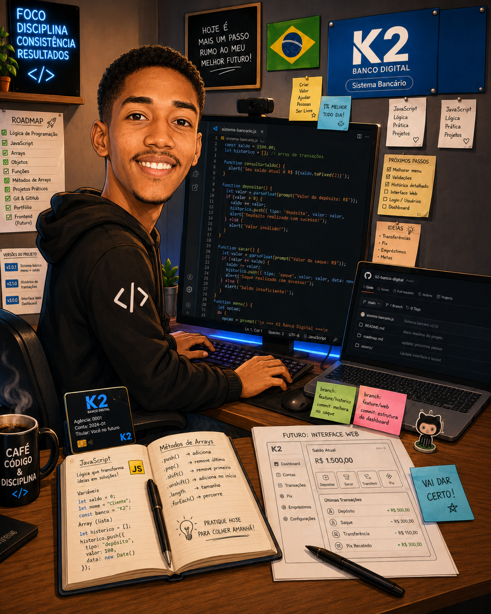

Eleve seu negócio digital a outro nível com um Front-end de qualidade!
Olá! Sou Kherlysson Ryann, desenvolvedor Full Stack com foco em HTML, CSS e JavaScript. Crio projetos práticos para desenvolver minhas habilidades, resolver problemas e transformar ideias em interfaces modernas e funcionais.
